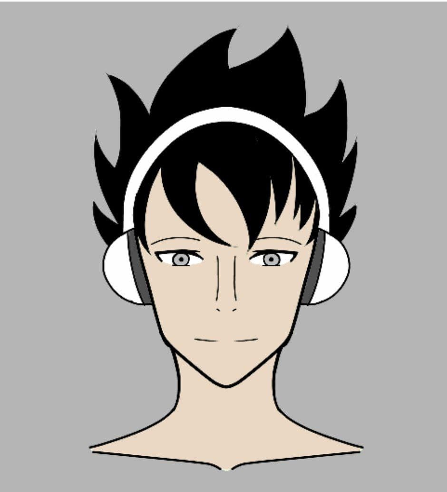
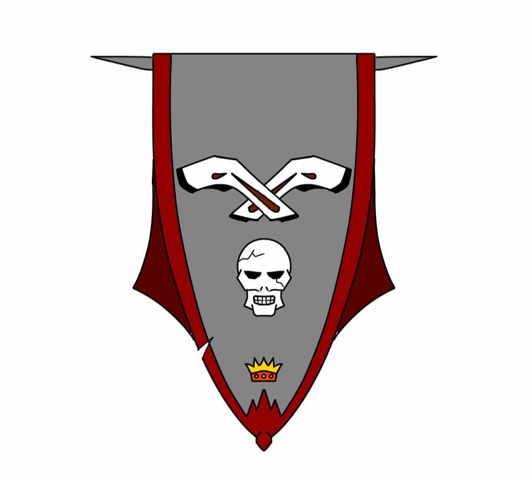
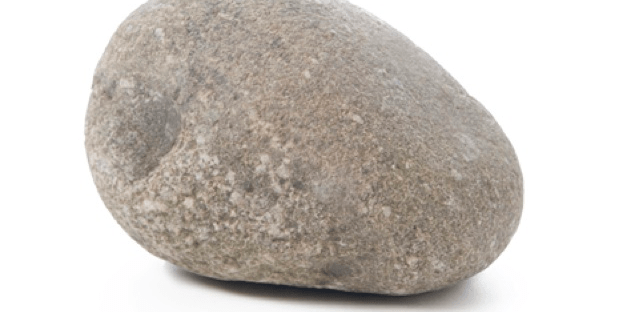

Somos un muy pequeño grupo que está conformado por 3 personas los cuales somos:
Es estudiantes de Ingeniería Informática y su hobbie es la escritura, tambien diempre ha escrito muchas historias de todo tipo y la música, cuando tiene algún tiempo libre crea alguna que otra canción (y son increibles). Su sueño desde hace mucho es poder escribir la mejor historia de todos los tiempos.
Es estudiante de Ingeniería Informática, su hobbie es dibujar yjugar videojuegos, fue el que propuso hace mucho tiempo la idea de crear una empresa destinada a los Videojuegos en u futuro.
Como su imagen lo muestra, es una piedra (es broma), es un estudiante de Ingeniería Informática y Diseño Gráfico, uno de sus hobbies es jugar videojuegos y también poder aprender todo lo que pueda de diferentes ámbitos, le gusta estar praprado para cualquier situación
Luego de haber conocido un poco más de nosotros, nos queda decir que a pesar de que somos un grupo pequeño, poco a poco iremos creciendo, a medida que nuestro proyecto avance nuestro grupo de trabajo también irá creciendo.